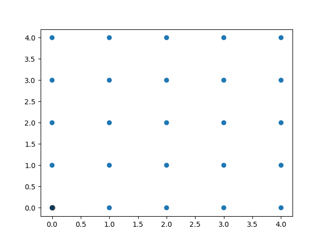

Note
Click here to download the full example code
Polygon Selector Demo¶
Shows how one can select indices of a polygon interactively.
Out:
Select points in the figure by enclosing them within a polygon.
Press the 'esc' key to start a new polygon.
Try holding the 'shift' key to move all of the vertices.
Try holding the 'ctrl' key to move a single vertex.
Selected points:
[]
import numpy as np
from matplotlib.widgets import PolygonSelector
from matplotlib.path import Path
class SelectFromCollection:
"""
Select indices from a matplotlib collection using `PolygonSelector`.
Selected indices are saved in the `ind` attribute. This tool fades out the
points that are not part of the selection (i.e., reduces their alpha
values). If your collection has alpha < 1, this tool will permanently
alter the alpha values.
Note that this tool selects collection objects based on their *origins*
(i.e., `offsets`).
Parameters
----------
ax : `~matplotlib.axes.Axes`
Axes to interact with.
collection : `matplotlib.collections.Collection` subclass
Collection you want to select from.
alpha_other : 0 <= float <= 1
To highlight a selection, this tool sets all selected points to an
alpha value of 1 and non-selected points to *alpha_other*.
"""
def __init__(self, ax, collection, alpha_other=0.3):
self.canvas = ax.figure.canvas
self.collection = collection
self.alpha_other = alpha_other
self.xys = collection.get_offsets()
self.Npts = len(self.xys)
# Ensure that we have separate colors for each object
self.fc = collection.get_facecolors()
if len(self.fc) == 0:
raise ValueError('Collection must have a facecolor')
elif len(self.fc) == 1:
self.fc = np.tile(self.fc, (self.Npts, 1))
self.poly = PolygonSelector(ax, self.onselect)
self.ind = []
def onselect(self, verts):
path = Path(verts)
self.ind = np.nonzero(path.contains_points(self.xys))[0]
self.fc[:, -1] = self.alpha_other
self.fc[self.ind, -1] = 1
self.collection.set_facecolors(self.fc)
self.canvas.draw_idle()
def disconnect(self):
self.poly.disconnect_events()
self.fc[:, -1] = 1
self.collection.set_facecolors(self.fc)
self.canvas.draw_idle()
if __name__ == '__main__':
import matplotlib.pyplot as plt
fig, ax = plt.subplots()
grid_size = 5
grid_x = np.tile(np.arange(grid_size), grid_size)
grid_y = np.repeat(np.arange(grid_size), grid_size)
pts = ax.scatter(grid_x, grid_y)
selector = SelectFromCollection(ax, pts)
print("Select points in the figure by enclosing them within a polygon.")
print("Press the 'esc' key to start a new polygon.")
print("Try holding the 'shift' key to move all of the vertices.")
print("Try holding the 'ctrl' key to move a single vertex.")
plt.show()
selector.disconnect()
# After figure is closed print the coordinates of the selected points
print('\nSelected points:')
print(selector.xys[selector.ind])
Keywords: matplotlib code example, codex, python plot, pyplot Gallery generated by Sphinx-Gallery